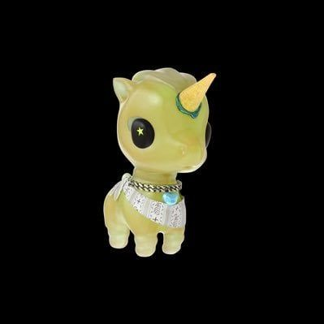
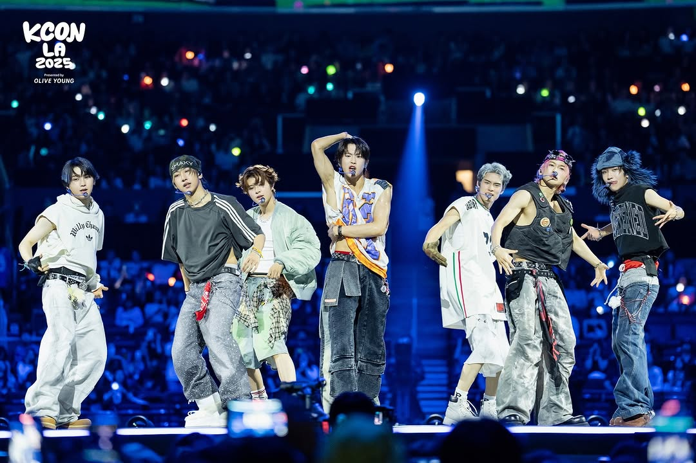

About the Group
NEWBEAT (뉴비트), also shortened to NBT, is a South Korean boy group under BEAT Interactive. The group consists of 7 members: Park Minseok, Hong Minsung, Jeon Yeoyeojeong, Choi Seohyun, Kim Taeyang, Jo Yunhu, and Kim Riwoo.
Before debut, the group was also known as HinLOVE (하이앤러브) or HIGH&LOW (하이앤로). They released their first pre-release song, “JeLLo”, on March 5, 2025, and officially debuted on March 24, 2025 with their first full album, RAW AND RAD.
Fandom

Fandom Name: NEURO (뉴로)
NEWBEAT’s fandom name gives the group a strong, memorable identity and ties into the energetic image they’ve built.
Official SNS
Performance Spotlight

NEWBEAT has already built a strong reputation for their performance style, stage energy, and striking group image. Their concept feels fresh, edgy, and polished all at once.